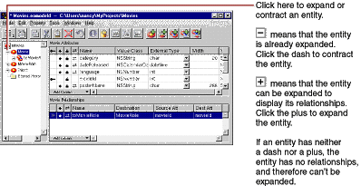
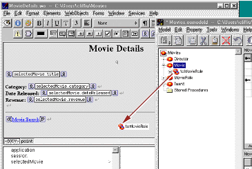
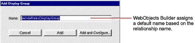
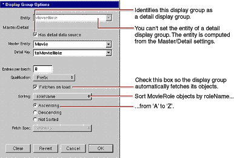

| PATH |

So far your Movies application fetches, inserts, updates, and deletes only Movie objects. Considered alone, a Movie object isn't as interesting as it is when it's related to actors and roles. In this section, you'll add MovieRole and Talent objects to the Movies application.
The relationships defined in your model now come into play.
Using Movie's movieRoles relationship,
you can display the MovieRoles for the selected Movie. In this type
of configuration, called master-detail, a master
display group holds enterprise objects for the source of a relationship,
while a detail display group holds records for the destination.
As individual records are selected in the master display group,
the detail display group gets a new set of enterprise objects to
correspond to the selection in the master.
In the Movies application, the master-detail configuration
is built around Movie's movieRoles relationship.
The configuration is split across two pages in the application.
The master, movieDisplayGroup,
is in the Main component, while the detail is in MovieDetails.
In this section, you'll
You can create a detail display group several different ways. You can write a declaration for it in Project Builder, or you can use WebObjects Builder's Add Variable/Method command. But the easiest way to create a detail display group is by dragging a relationship from EOModeler into your component, as described below.

toMovieRole relationship
from the tree view into the MovieDetails component's object browser.

An Add Display Group panel opens.

The Display Group Options panel opens so you can immediately configure the newly created display group.

Ensure
that the "Has detail data source" box is checked. This means
that movieRoleDisplayGroup gets
its objects from a EODetailDataSource object.
All display groups use some kind of data source to fetch their objects. A data source is an object that exists primarily as a simple means for a WODisplayGroup to access a store of objects. It's through a data source that a display group fetches, inserts, updates, and deletes database records.
An EODetailDataSource is a subclass of EODataSource that's intended for use in master-detail configurations. A detail data source keeps track of a master object and a detail key. The master object is typically the selected object in a master display group, but a master display group isn't strictly required. The detail key is the name of the relationship on which the master-detail configuration is based. When a detail display group asks its data source to fetch, the EODetailDataSource simply gets the destination objects from the master object as follows:
detailObjects = masterObject.valueForKey(detailKey);In
your master-detail configuration, the master object is the selected
Movie, and the detail key is movieRoles.
When movieRoleDisplayGroup asks
its data source for its MovieRole objects, the detail WODisplayGroup
returns the objects in the selected Movie's movieRoles array
of MovieRoles. Similarly, when MovieRole objects are inserted or
deleted in movieRoleDisplayGroup,
they are added and removed from the master object's movieRoles array.
roleName.When "Fetches on load" is selected, the display group fetches its objects as soon as the component is loaded into the application. You want this feature in the MovieDetails page so that users are immediately presented with the selected movie's roles. In contrast, the Main page does not fetch on load; it shouldn't present a list of movies until the user has entered search criteria and clicked Match.
setSelectedMovie method
to look like the following: public void setSelectedMovie(EOEnterpriseObject newSelectedMovie) {
selectedMovie = newSelectedMovie;
movieRoleDisplayGroup.setMasterObject(newSelectedMovie);
}With
this addition, whenever a user navigates to the MovieDetails page, setSelectedMovie updates
the master object of the movieRoleDisplayGroup so
it displays the corresponding MovieRole objects.
Now you'll extend the user interface of the MovieDetails component to display the actors in the selected movie. Because different movies have different numbers of roles, you need the dynamism of a repetition element. When you're done adding the repetition, your component should look like this:
![[image: ../Art/movdetui.gif]](../Art/movdetui.gif)
Starring: beneath
the Revenue line.The strings should all be on the same line, so don't type carriage returns between them.
Now configure MovieDetails' repetition in a way similar
to the way Main's repetition is configured. First you need to
create a new variable to bind to the repetition's item attribute.
movieRole, whose
type is set to the MovieRole entity.Don't create set and
get methods for movieRole.
You won't need accessor methods because the variable is used only
within the MovieDetails component and shouldn't be visible to
any other classes.
movieRoleDisplayGroup.displayedObjects to
the repetition's list attribute.movieRole to
the repetition's item attribute.movieRole.toTalent.firstName to
the value attribute of
the first string in the repetition.movieRole.toTalent.lastName to
the value attribute of
the second string.movieRole.roleName to
the value attribute of
the last string.When you're done, the repetition bindings should look like the following:
Be sure that all your project's files are saved (including the components in WebObjects Builder and the model in EOModeler), and build and run your application. In the Main page, select a movie and click the Movie Details link. Now, in addition to displaying all the movie's information, the Movie Details page should also display the movie's roles and actors.
© 2001 Apple Computer, Inc.